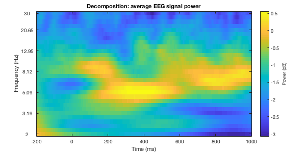
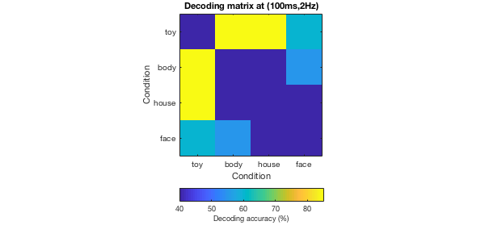
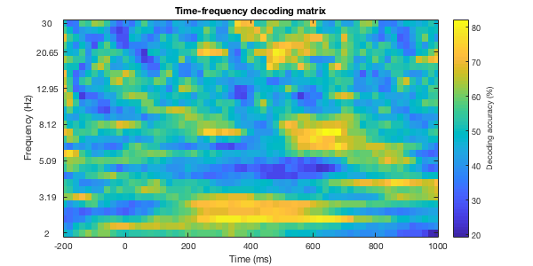

Example : Decode object categories in time and frequency
This script demonstrates time- and frequency-resolved multivariate analysis of the example EEG dataset for the study "Visual category representation in the infant brain"
Contents
- Initialize
- Download dataset (if necessary) and add VCR_infant to the MATLAB path
- Load example dataset
- Define irrelevant channels (only works for infant example dataset)
- Sort trials into four category conditions
- Time-frequency decomposition
- Define time points and frequencies of interest
- Decode object categories in time and frequency
- Plot EEG dB power after decomposition
- Plot decoding matrix at (100ms, 2Hz)
- Plot time-frequency decoding matrix
Initialize
% Clean command window, workspace and figure windows clc; clear; close all; % Start timing tic;
Download dataset (if necessary) and add VCR_infant to the MATLAB path
setup([3,4]);
Downloading exampledata_infant_longEpoch.mat (please be patient). Downloading is done! Downloading exampledata_adult_longEpoch.mat (please be patient). Downloading is done!
Load example dataset
% User input for running decoding on example infant or adult dataset. % datasetstr = 'infant' or datasetstr = 'adult'; datasetstr = 'infant'; load(['exampledata_',datasetstr,'_longEpoch.mat']); % Check timelock timelock
timelock =
struct with fields:
time: [1×1000 double]
trial: [75×30×1000 double]
trialinfo: [75×2 double]
dimord: 'rpt_chan_time'
label: {30×1 cell}
Define irrelevant channels (only works for infant example dataset)
if strcmp(datasetstr, 'infant') flagChannels=~ismember(timelock.label,... {'Cz','HEOG','VEOG','TRIGGER', 'V-', 'V+Fp2'}); else flagChannels=true(length(timelock.label),1); end
Sort trials into four category conditions
[dataCell{1:4,2}]=deal('toy','body','house','face');
for i_conds = 1:4
flagTrials = ismember(timelock.trialinfo(:,2),i_conds);
dataCell{i_conds,1} = single(timelock.trial(flagTrials,flagChannels,:));
end
% Check dataCell
dataCell
dataCell =
4×2 cell array
{16×25×1000 single} {'toy' }
{23×25×1000 single} {'body' }
{18×25×1000 single} {'house'}
{18×25×1000 single} {'face' }
Time-frequency decomposition
[dBPowerCell,convo] = timefrexdecomp(dataCell); clear dataCell; % Check dBPowerCell and convo dBPowerCell convo
dBPowerCell =
4×30 cell array
Columns 1 through 3
{16×25×1000 single} {16×25×1000 single} {16×25×1000 single}
{23×25×1000 single} {23×25×1000 single} {23×25×1000 single}
{18×25×1000 single} {18×25×1000 single} {18×25×1000 single}
{18×25×1000 single} {18×25×1000 single} {18×25×1000 single}
Columns 4 through 6
{16×25×1000 single} {16×25×1000 single} {16×25×1000 single}
{23×25×1000 single} {23×25×1000 single} {23×25×1000 single}
{18×25×1000 single} {18×25×1000 single} {18×25×1000 single}
{18×25×1000 single} {18×25×1000 single} {18×25×1000 single}
Columns 7 through 9
{16×25×1000 single} {16×25×1000 single} {16×25×1000 single}
{23×25×1000 single} {23×25×1000 single} {23×25×1000 single}
{18×25×1000 single} {18×25×1000 single} {18×25×1000 single}
{18×25×1000 single} {18×25×1000 single} {18×25×1000 single}
Columns 10 through 12
{16×25×1000 single} {16×25×1000 single} {16×25×1000 single}
{23×25×1000 single} {23×25×1000 single} {23×25×1000 single}
{18×25×1000 single} {18×25×1000 single} {18×25×1000 single}
{18×25×1000 single} {18×25×1000 single} {18×25×1000 single}
Columns 13 through 15
{16×25×1000 single} {16×25×1000 single} {16×25×1000 single}
{23×25×1000 single} {23×25×1000 single} {23×25×1000 single}
{18×25×1000 single} {18×25×1000 single} {18×25×1000 single}
{18×25×1000 single} {18×25×1000 single} {18×25×1000 single}
Columns 16 through 18
{16×25×1000 single} {16×25×1000 single} {16×25×1000 single}
{23×25×1000 single} {23×25×1000 single} {23×25×1000 single}
{18×25×1000 single} {18×25×1000 single} {18×25×1000 single}
{18×25×1000 single} {18×25×1000 single} {18×25×1000 single}
Columns 19 through 21
{16×25×1000 single} {16×25×1000 single} {16×25×1000 single}
{23×25×1000 single} {23×25×1000 single} {23×25×1000 single}
{18×25×1000 single} {18×25×1000 single} {18×25×1000 single}
{18×25×1000 single} {18×25×1000 single} {18×25×1000 single}
Columns 22 through 24
{16×25×1000 single} {16×25×1000 single} {16×25×1000 single}
{23×25×1000 single} {23×25×1000 single} {23×25×1000 single}
{18×25×1000 single} {18×25×1000 single} {18×25×1000 single}
{18×25×1000 single} {18×25×1000 single} {18×25×1000 single}
Columns 25 through 27
{16×25×1000 single} {16×25×1000 single} {16×25×1000 single}
{23×25×1000 single} {23×25×1000 single} {23×25×1000 single}
{18×25×1000 single} {18×25×1000 single} {18×25×1000 single}
{18×25×1000 single} {18×25×1000 single} {18×25×1000 single}
Columns 28 through 30
{16×25×1000 single} {16×25×1000 single} {16×25×1000 single}
{23×25×1000 single} {23×25×1000 single} {23×25×1000 single}
{18×25×1000 single} {18×25×1000 single} {18×25×1000 single}
{18×25×1000 single} {18×25×1000 single} {18×25×1000 single}
convo =
struct with fields:
condnums: 4
num_channels: 25
num_tps: 1000
num_trls: [4×1 double]
times: [1×1000 double]
epoch_idx: [2×1 double]
srate: 500
frex_min: 2
frex_max: 30
frex_num: 30
frex_baseidx: [2×1 double]
mor_cyclenum: 5
halfwavelet: 1.3000
mor_time: [1×1301 double]
mor_frex: [1×30 double]
gausian_width: [1×30 double]
num_wavelet: 1301
num_half_of_wavelet: 650
num_eegchandata: 18000
num_convolution: 19300
num_conv_pow2: 32768
Define time points and frequencies of interest
% Time points of interest TOI = dsearchn(convo.times',[-200, 1000]'); dBPowerCell = cellfun(@(x) x(:,:,TOI(1):TOI(2)), dBPowerCell,'UniformOutput', 0); % Frequencies of interest FOI = convo.mor_frex; frequencyF = length(FOI);
Decode object categories in time and frequency
% Time- and frequency- resolved classification analysis % The procedure is equivalent to the time-resolved classification analysis % (see example_decodingintime.m) with the only difference that % classification is conducted on power value patterns instead of % raw activation value patterns. % The analysis is conducted for each frequency bin separately. % Pre-allocate cell array DA_frexCell = cell(frequencyF,1); for frexF = 1:frequencyF %Loop through frequencies % Define dataCell for decoding, i.e., power data in one frequency step dataCell = {dBPowerCell{1:4,frexF}}; dataCell = reshape(dataCell,[4,1]); % For time and memory efficiency, we downsampled dB power data to a % sampling rate of 50 Hz by averaging the raw EEG data in 20ms bins. origTempRes = 500; % 500 Hz resTempRes = 50; % 50 Hz timePoints2Average = origTempRes/resTempRes; [dataCell, timepointT] = averagetimepoints(dataCell, timePoints2Average); % timepointT: Time points of EEG epoch (from -200ms to +1000ms) in 20ms-steps % Decoding is done pair-wise for all pairs of conditions. % For M conditions, you will have to do ((M*(M-1))/2 (i.e., possible % pair-wise condition combinations) condition-pair specific classifications. % The result you could get for a pairwise classification would be 0, 50 or % 100% correct with 50% being chance level. % NOTE: Randomization is used within averagetrials.m so results might % differ between computations. % We repeat the training & testing procedure "permutationX" times average % the accuracies of all repetitions to get the mean decoding accuracy. permutationX = 10; % Theoretically, the more repetitions, the finer the sampling of a real % state of things. 100 permutations is usually enough, one can however % determine empirically the number for a given dataset. % Here, we use 10 to speed up the example. % Object categories as conditions conditionM = 4; % Pre-allocate result matrix DA = nan(permutationX, conditionM, conditionM, timepointT); % This analysis yields a M*M decoding accuracy matrix indexed % in rows and columns by the conditions compared for all time point % combinations from -200ms to +1,000ms. for permX = 1:permutationX % Loop through repetitions % To increase the signal-to-noise ratio (SNR), % we randomly assigned raw trials into N bins of approximately % equal size each and averaged them into pseudo-trials. % In this example, N = 4. pseudoTrialN = 4; pseudoData = averagetrials(dataCell, pseudoTrialN); for condA = 1:conditionM % Loop for condition A for condB = condA+1:conditionM % Loop for condition B for timeT = 1:timepointT % Loop for time point A % Implement leave-one-pseudo-trial-out cross validated % classification approach. % We trained the SVM classifier to perform pair-wise decoding on any % two conditions using three of the four pseudo-trials % for training at time point A. training_data = ... double([squeeze(pseudoData(condA, 1:end - 1, :, timeT)); ... squeeze(pseudoData(condB, 1:end - 1, :, timeT))]); labels_train = [ones(pseudoTrialN-1,1);... 2*ones(pseudoTrialN - 1,1)]; % Train model model = svmtrain(labels_train, training_data, '-s 0 -t 0 -q'); % We used the fourth left-out pseudo-trial % at time point B for testing, yielding classification % accuracy (chance level 50%) as a result. testing_data = double([squeeze(pseudoData(condA, end, :, timeT))'; ... squeeze(pseudoData(condB, end, :, timeT))']); labels_test = [1;2]; % Test model [~, accuracy, ~] = svmpredict(labels_test, testing_data, model, '-q'); % Assign the decoding result into DA matrix DA(permX, condB, condA, timeT) = accuracy(1); end end end end % Average the DA matrix across repetitions DA_frexCell{frexF,1} = nanmean(DA,1); end DA_timefrex = cat(1,DA_frexCell{:}); % 4D matrix: frequency x condition x condition x time point % Display run time disp("Decoding done.") runTime_minutes = toc/60
Decoding done.
runTime_minutes =
2.6663
Plot EEG dB power after decomposition
% We average dB power values across channels, trials meandBPowerCell = cellfun(@(x) mean(mean(x,1),2),dBPowerCell,'UniformOutput',0); meandBPowerMat = cell2mat(meandBPowerCell); figure(1); imagesc(-200:2:1000,1:30,squeeze(nanmean(meandBPowerMat,1))); set(gca,'YTick',[1,6,11,16,21,26,30], ... 'YTickLabel', round(FOI([1,6,11,16,21,26,30]),2)); axis xy; axis tight; xlim([-200,1000]); xlabel('Time (ms)'); ylabel('Frequency (Hz)'); CH = colorbar('eastoutside'); CH.Label.String = 'Power (dB)'; title('Decomposition: average EEG signal power'); % Adjust the position and size of figure rectFig = get(gcf,'position'); width=600; height=300; set(gcf,'position',[rectFig(1),rectFig(2),width,height], 'color', 'white');
Plot decoding matrix at (100ms, 2Hz)
% For each time-frequency combination (e.g., tx = 100ms; fy = 2Hz), % we get a decoding accuracy matrix of size 4 × 4, with rows and columns % indexed by the conditions classified. % The matrix is symmetric across the diagonal, with the diagonal itself being undefined. % This procedure yielded one decoding matrix for every time point. tx = dsearchn((-200:20:1000)', 100); fy = dsearchn(FOI', 2); DA_mean_matrix = squeeze(DA_timefrex(fy,:,:,tx)); DecodingMatrix = triu(DA_mean_matrix.',1) + tril(DA_mean_matrix); figure(2); imagesc(1:4,1:4,DecodingMatrix); set(gca, 'xtick',1:4, 'xticklabel',{'toy','body','house','face'},... 'ytick',1:4, 'yticklabel',{'toy','body','house','face'}); axis equal; axis tight; xlabel('Condition'); ylabel ('Condition'); CH = colorbar('southoutside'); CH.Label.String = 'Decoding accuracy (%)'; title('Decoding matrix at (100ms,2Hz)'); % Adjust the position and size of figure rectFig = get(gcf,'position'); width=600; height=300; set(gcf,'position',[rectFig(1),rectFig(2),width,height], 'color', 'white');
Plot time-frequency decoding matrix
figure(3); imagesc(-200:20:1000, 1:30, squeeze(nanmean(nanmean(DA_timefrex,2),3))); set(gca,'YTick',[1,6,11,16,21,26,30], ... 'YTickLabel', round(FOI([1,6,11,16,21,26,30]),2)); axis xy; axis tight; xlim([-200,1000]); xlabel('Time (ms)'); ylabel('Frequency (Hz)'); CH = colorbar('eastoutside'); CH.Label.String = 'Decoding accuracy (%)'; title('Time-frequency decoding matrix'); % Adjust the position and size of figure rectFig = get(gcf,'position'); width=600; height=300; set(gcf,'position',[rectFig(1),rectFig(2),width,height], 'color', 'white');